Postkort fra Tanzania
Kære alle
Vi har nu rejst og været mange steder i Tanzania. Det har været vildt, det har været udfordrende og det har været en kæmpe oplevelse! Dette “postkort” er bare for at prøve, at dele en lille del af oplevelsen. Beklager det blev lidt langt, men betragt det som en måneds facebookopslag samlet, så er det vel fair nok! Billederne fås i stor størrelse, hvis man trykker på dem (jeg (Peder) har brugt lidt tid på at sætte dokumentet op (i rmarkdown)…nyder vist at pusle med min computer, ret Svend Ove agtigt (min morfar, han var dejlig!)).
Hvis I ikke gider læse det, så giver vi gerne en lille fortælling, når vi ses! Her er lidt flere billeder.
Kh. Peder, Christina, Carl og Peder
Før og efter:
| 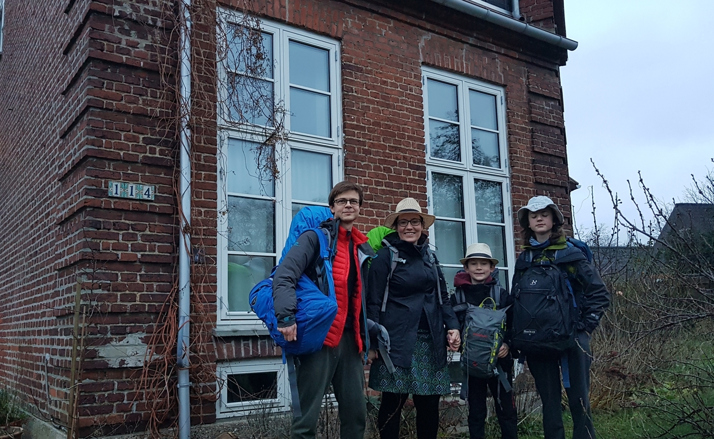 | .jpg) |
{kind=link}
Livet i Tanzania
Man bliver sgu’ overvældet af, hvor anderledes der er i Tanzania, specielt når man har sine børn med. Selvom vi kun har boet på steder for rige mennesker, så kryber oplevelserne under huden. Noget af det stærkeste har været når vi simpelthen bare har gået en tur rundt i en by og set på hverdagslivet her - det er anderledes, på godt og ondt!
På swahili “Hakuna matata”: Tag det roligt. Det kender man fra løvernes konge (filmen), men nu har vi også lært “pole pole”: Slow down. På dansk måske: “skru’ ned for tempoet”. Helt klart noget vi kan lære af dem - af os kunne de så lære, at organisere sig lidt bedre. F.eks. er det meget overraskende, så upræcise de er med alting - lige fra, at der ikke er priser på nogle varer i butikker, til: der flyder med affald overalt, veje og bygninger er i mega ringe stand, folk sidder bare og stener - i det hele taget man meget på egen hånd her - mangler man begge ben, så må man tage klipklapper på hænderne og f.eks. tigge fra de holdende biler midt på hovedvejen! En gut vi snakkede med beskrev: “Egentlig, så tænker man kun på sig selv her”.
På den anden side, så hænger man meget mere ud med hinanden, man sidder ikke inde i sit hus og kukkelurer…well, de fleste huse her er faktisk heller ikke værd, at opholde sig særligt længe inde i!
Et par gange har vi prøvet at nævne klimaforandringer i en samtale, men det er simpelthen ikke et punkt på agandaen her. Meget naturligt, når man faktisk ikke engang har en plan for, hvad der skal ske i morgen. “Hakuna matata, det gør dig fri”, tja, det er ikke meget afrikansk kultur vi får, uden at opsøge den, er det kun fra Løvernes konge!?
I Tanzania er der trygt og fredeligt
Tanzania er fredeligt og man føler sig tryg. Selvfølgeligt møder man lidt påstyr når man kommer rundt, men alle man snakker med er virkeligt rare. De har noget værdifuld kultur, det er meget ligefremt når man snakker med hinanden, f.eks. var der flere gange hvor vores guide skulle købe noget, hvor han endte med at snakke løs, på swahili, med den som solgte, og vi spurgte om han kendte vedkommende, men nej, de snakkede bare lidt…modsat i Danmark, hvor et menneske i en butik jo nærmest betragtes som en maskine!
Dog hilser alle mulige fremmede lidt rigeligt og overfladisk på sådan nogen som os, men det vender man sig til.
Maden vi har fået, har været rigtig god, specielt på Zanzibar, hvor de også har alle friske krydderier. Frugterne er ubeskriveligt meget bedre end det vi får nordpå. Generelt fantastisk lækre råvarer og generelt lækkert tilberedt. Måske er det gennemsnitlige måltid hernede dog nok ikke helt så spændende.
Den vildeste natur
Tanzania er det vildeste smukke land. Her er simpelthen alt: hav, bjerge, natur, varmt (lidt for varmt om natten for os!)…tættere på paradis end Danmark om vinteren! Dog mangler der god kaffe og ost! Sjovt med kaffen, da de jo dyrker den, men man får Africafe overalt - en lidt smagsløs pulverkaffe.
Ved ikke om vi egentligt har fortjent, at komme hertil på den måde og fare rundt i naturen. Tanzanianerne har sgu’ ikke været der, det er alt for dyrt at leje jeep og guide. Vi har været helt på tæt hold i to nationalparker: Først i regnskoven i Udzungwa og derefter safari i Ruaha.
I regnskoven er der vanvittigt meget liv, og det er mega varmt og fugtigt - næsten for meget, f.eks. umuligt at tørre noget tøj vi vaskede, det hang 2-3 dage på snor under halvtag, uden at tørre og endte med at blive surt. Klimaet og omgivelserne var også lidt udfordrende for drengene, Carl har været syg, med feber og bøvl med maven og ørene, og well, det var muligvis lidt for overvældende for Vilfred. Vi har måttet tilpasse os for ikke at gøre det til en dårlig oplevelse - dvs. der har hver dag været pauser med devicedimsning! Men vi har været på nogle rigtig gode hikes ind i junglen, bl.a. til de smukkeste vandfald, hvor man kunne bade, og set virkeligt mange dyr og planter. Dog meget langt fra alt, f.eks. er der 250 sommerfuglearter i Udzungwa, selvom Christina er meget ihærdig, mener hun kun, at hun har set 15 af dem.
White monkabey (endemisk og sjælden abe) og træ der gror på en sten:
| 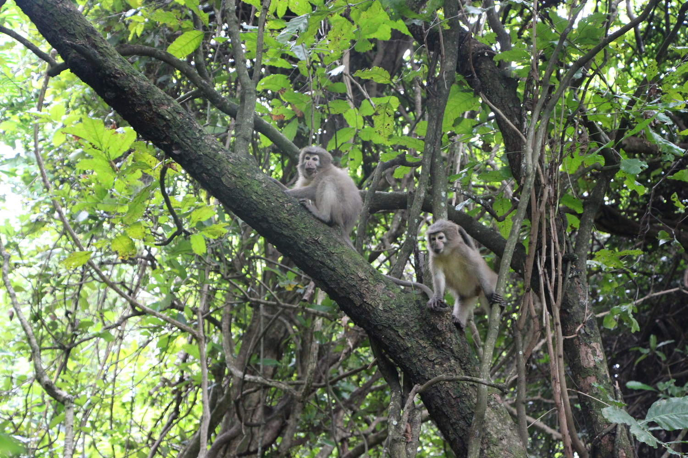 |  |
{kind=link}
De vildeste sommerfugle og insekter. Christina holder en Buffalo spider:
| 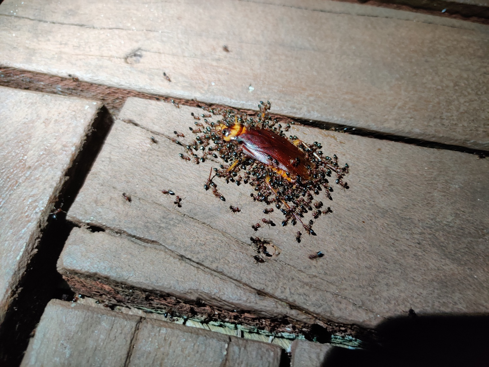 | 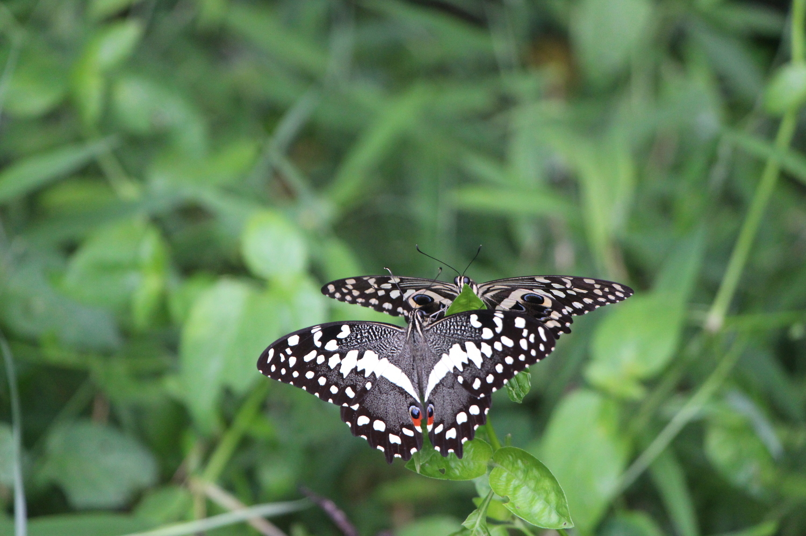 |
| 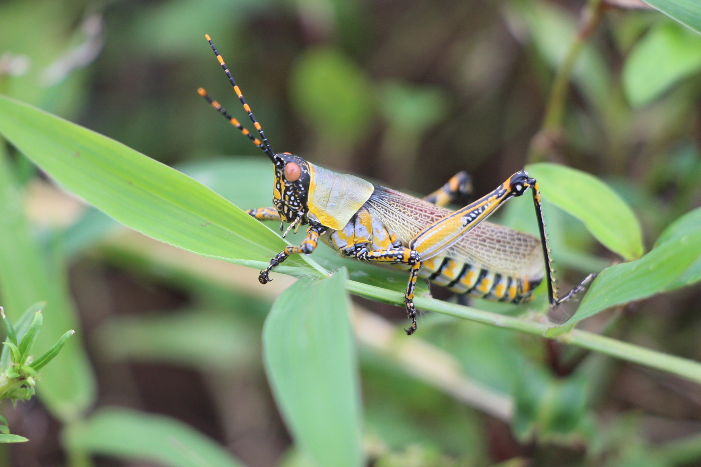 | 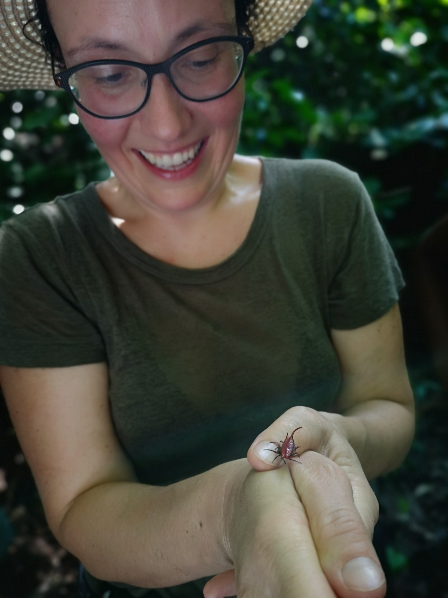 |
{kind=link}
{kind=link}
{kind=link}
{kind=link}
Slanger:
| 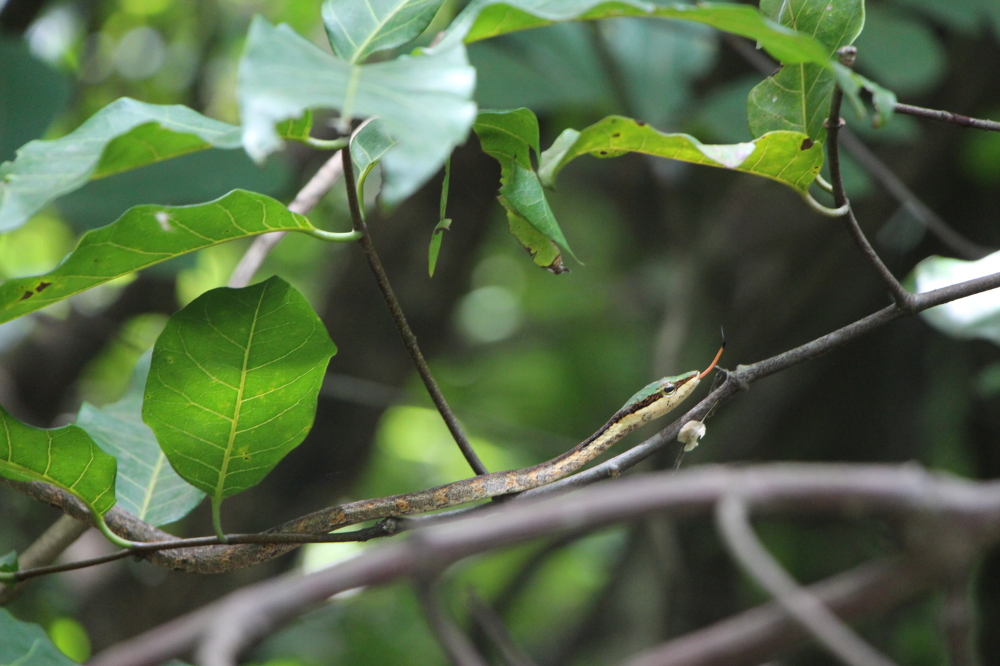 | 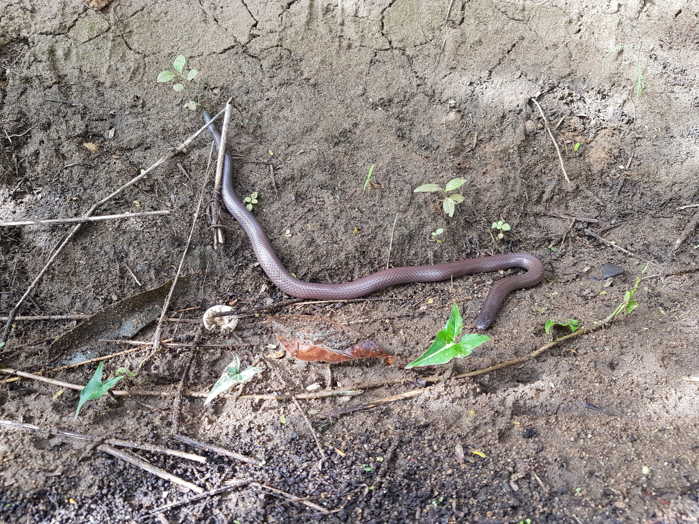 |
{kind=link}
{kind=link}
Og vandfald man kan bade i. Vilfred flyver og Carl har vist gang i noget Gollum imitation:
| 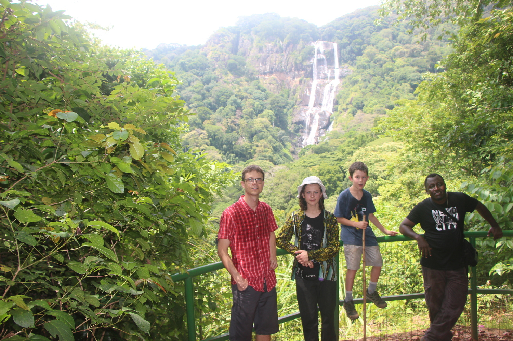 |  |
{kind=link}
I Ruaha er der buskland og savanne. Det er en hjerneblæsende oplevelse - stå op til solopgang sammen med flodheste, impalaer, elefanter, giraffer, løver og en millard fugle og endnu flere insekter. Der er sindsygt meget liv om morgenen når det er køligt, men det lægger sig midt på dagen, der bliver det simpelthen kogeren for alle. Vi udførte “game driving”, det lyder skørt og det er det sådan set også, men faktisk meget rammende betegnelse - man kører simpelthen rundt i jeep og glor på dyr. Det er den eneste måde man må komme omkring i national parken, man må ikke engang gå ud af bilen.
Campen vi havde helt for os selv, med vores gode venner guide Gasto og kok Nico. To drenge på taget i solnedgang:
 |
 |
Toyota landcruiser, fedt navn, og det eneste rigtige valg til safari! og en red-billed hornbill:
 |
 |
Yes, vi så løver to gange - det lå nu mest og sov, men store katte! og altid aber - der er noget genkendeligt ved dem:
| 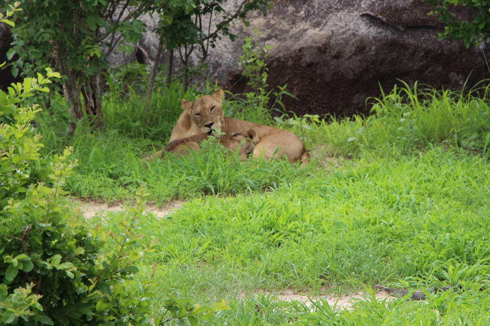 |  |
{kind=link}
De store dyr er imponerende, men Christina er mest forelsket i de små:
| 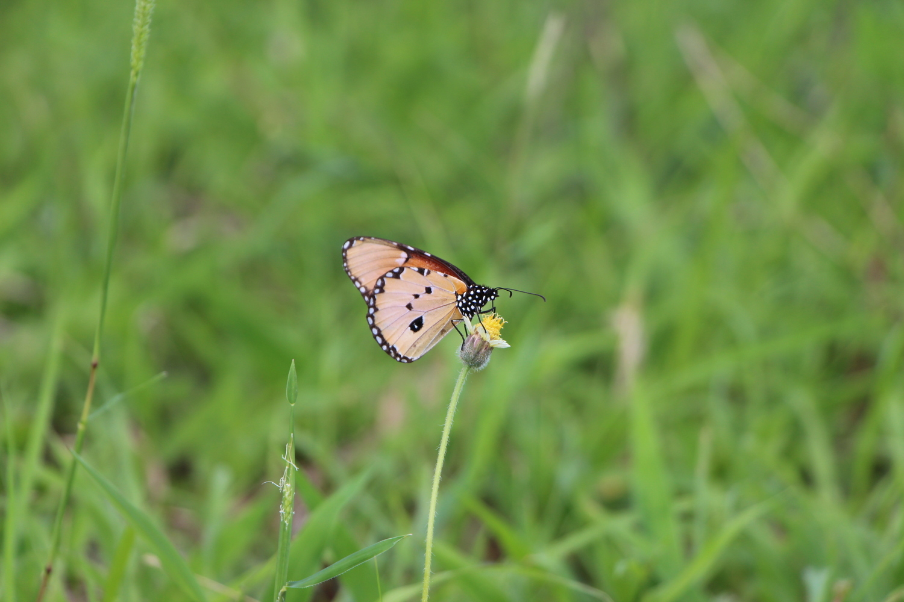 | 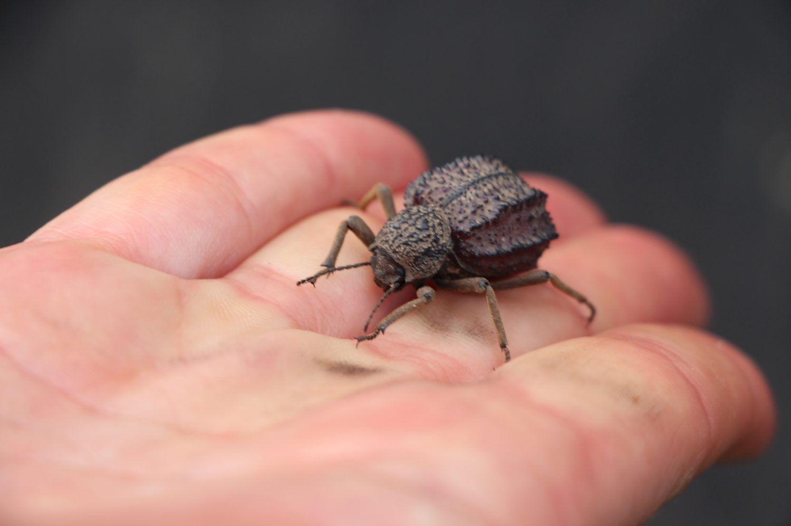 |
{kind=link}
{kind=link}
Christinas ubetingede højdepunkt: Lortebiller! Meget spektakulært - de samarbejder og laver over 5 cm høje kugler af elefantlort og ruller afsted og ned i huller:
 |
 |
| 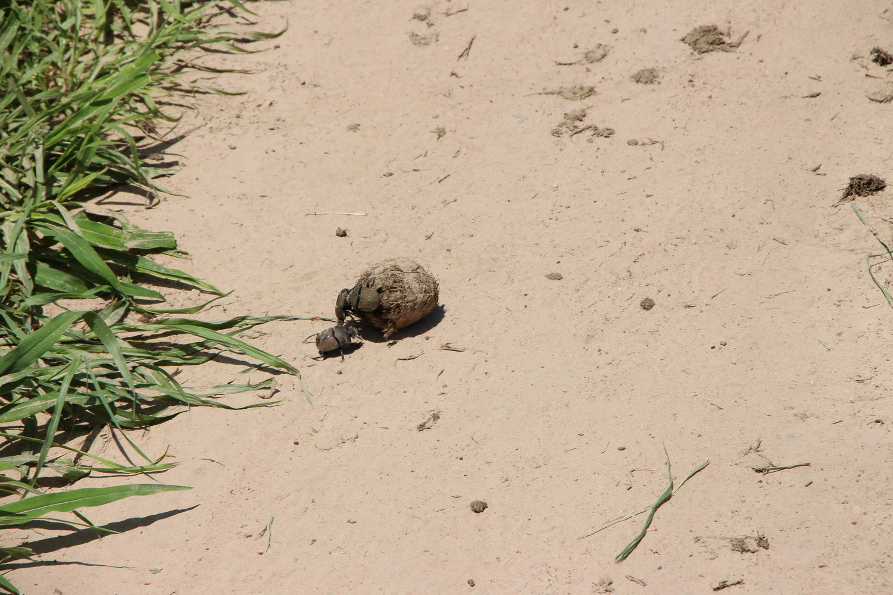 | 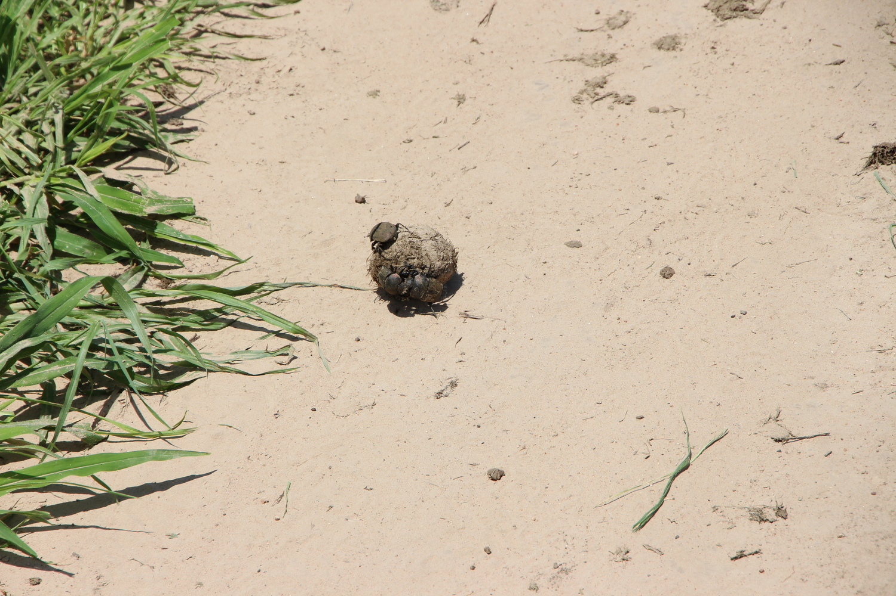 |
{kind=link}
{kind=link}
Byer og veje
Oplevelserne i byerne var på en måde noget af det som gør mest indtryk. Der er sindsygt mange mennesker, og det ser ikke ud til at de fleste har særligt meget. Vores guide (Gasto, som tog os rundt på i landcruiser i 10 dage) sagde, at der nu er 7 millioner i Dar Es Salaam. Peders bud er, at der så er 1 millioner små vejboder, men kun 10 forskellge slags, det hyppigste: Drikkelse og snack, tasker, klipklapper, tlf. tilbehør, …l Det er noget af det vildeste, man tænker, at hvis en nu tænkte: “hov, måske skulle jeg ikke prøve at sidde her hele dagen og sælge det, som de andre 100 boder sælger”, så ville der ske ting og sager…men det er der vist ingen der gør.
Noget andet skørt er, at alle steder vi kom, hvor vi skulle betjenes sammen med lokale, så medvirkede de alle til, at vi kom først i køen - altså uden vi gjorde noget som helst, sådan var det bare - en mystisk og ekstrem jantelov måske!
Men altså, det er kæmpe oplevelser, at gå igennem et marked, der sker sindsygt meget. Råben, klirren, grin, gøjl, tror de hygger sig med det.
På vejene, vi tog nogle crazy overhalinger af lastbiler - Dar Es Salaam har en kæmpe havn, og der køres varer i tvivlsomme lastbiler (de fleste er sikker fra skrot i Europa) af hovedvejen til lande længere inde i Afrika. Busserne er farverige, både deres fede maling og den sorte røg, som kommer ud af dem, uargs! De er fyldte og man må nok ofte regne med lidt et ekstra stop eller to på vejen.
Typisk med rigtig store vandhuller på vejen. På vores første tur måtte vi simpelthen stoppe 3 km før vi var fremme, det var i en normal Toyota (80% af bilerne er Toyota), og vi havde været igennem vand der gik igennem til motoren og det dampede.
Vandhul og benzinopfyldning af de lokale fra vandflasker:
| 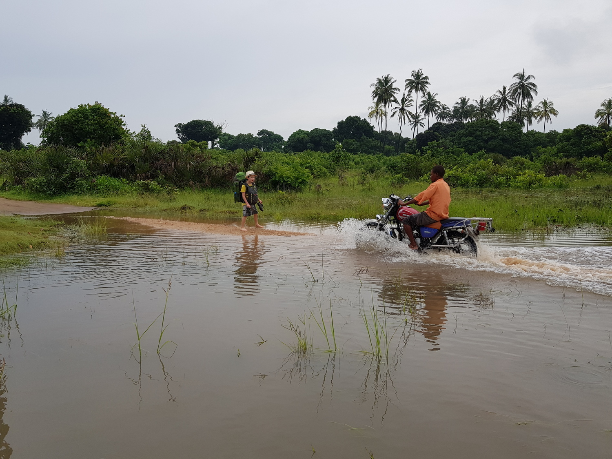 |  |
{kind=link}
Man ser mange nedbrud og problematisk læssede fartøjer:
 |
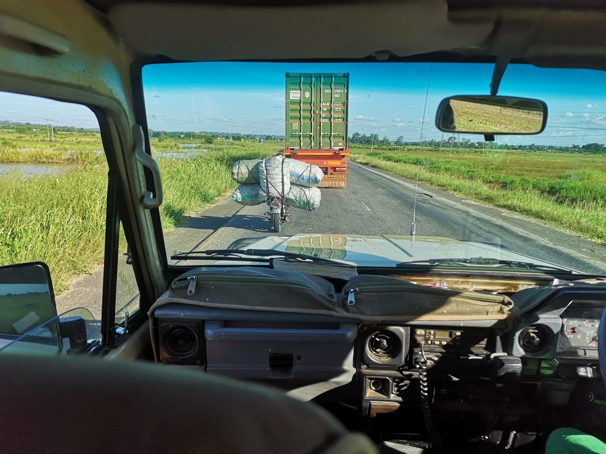 |
{kind=link}
Marked i Iringa og madrassalg ved hovedvejen i Dar:
| 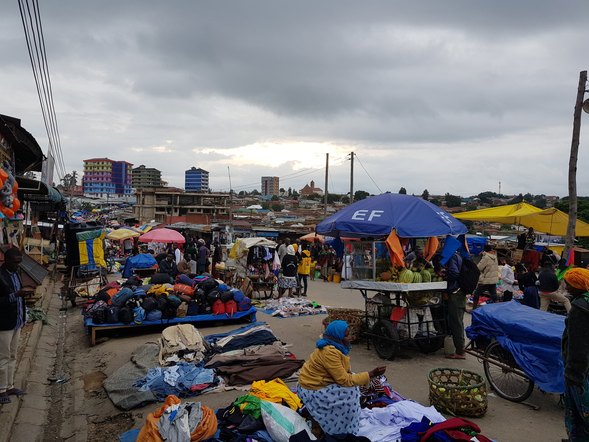 |  |
{kind=link}
Hotelresorts og hygiejne
Ja, vi har boet på resorts, vi startede med 5 dage og sluttede med 5 dage…det er for de rige, dvs. folk fra vesten, men ja, vi har jo forventninger om at tingene fungerer, og at vi sover i en fin seng…og øj, man bliver sgu’ også glad for AC, det er simpelthen så varmt at sove uden - ruineret nattesøvn er ufedt.
Grænsen for hvad der er beskidt og hvad der kan kaldes “god stand” er simpelthen ligger et andet sted. I et hus uden gulv, dvs. med jordgulv, ja så er tingene lidt mindre rene. Køkkener i lokale huse er med et slags kulfyret lerkomfur og man ser kvinder stå bukket mens de laver mad. Vi var på et par lokale restaurenter - den danske hygienjesmiley ville være rigtig vred hvis den kom på besøg!
De steder vi har været har været virkeligt fantastiske steder!
Sov i telte på camp i regnskoven og på safari:
{kind=link}
Efterladenskaber på stranden på Zanzibar - nej, det er ikke dyrespor ved siden af. Tja, det er jo rimeligt praktisk toilet ved lavvande, så skylles det ud ved højvande…Meeeen, addrr, når man jokker i det!
{kind=link}
Affaldshåntering foregår ved afbrænding alle steder i små bål. Eller ved bare at smide det: “trash area”, ja, der var en container, men det var ikke blevet tømt i nogle år. I Stone Town havde de dog indsamling - i brugte dunke skåret over:
 |
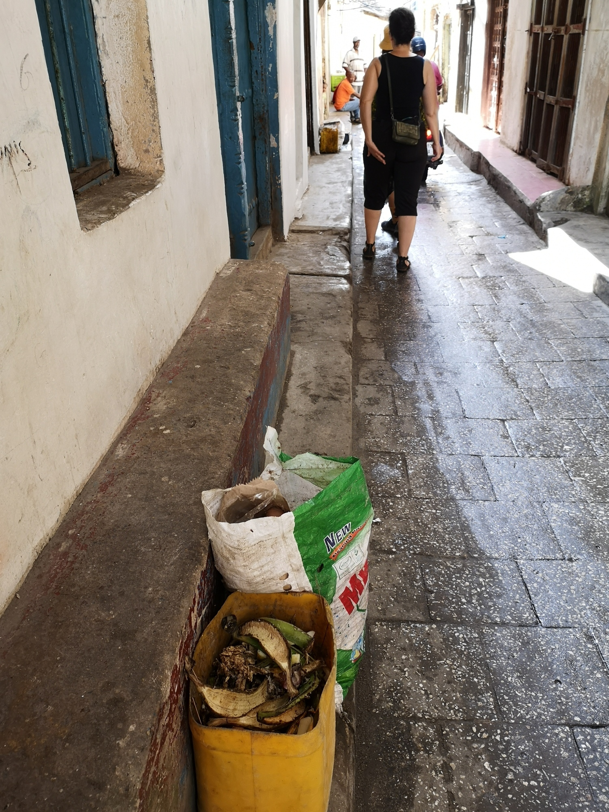 |
{kind=link}
Zanzibar
Vi har været på Zanzibar i 10 dage. Tror vi må vise billeder og fortælle lidt når vi ses!